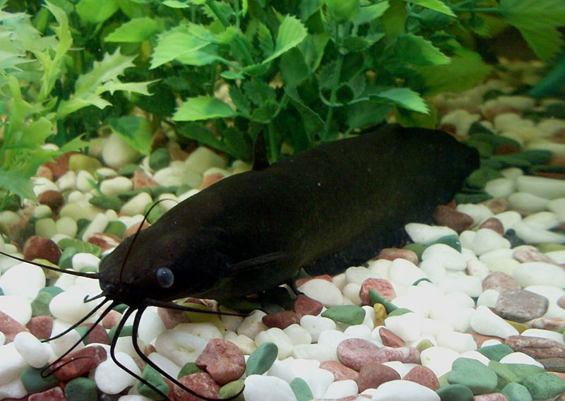

सिंघीStinging Catfish
Heteropneustes fossilis · Heteropneustidae · FSH-0011

- Scientific name
- Heteropneustes fossilis (Bloch, 1794)
- Family
- Heteropneustidae
- Hindi
- सिंघी
- Status here
- native
- IUCN
- LC
When to look कब देखें
Present all year.
सिंघी / Stinging Catfish
Heteropneustes fossilis (Bloch, 1794) — Heteropneustidae
सिंघी (स्टिंगिंग कैटफिश) — पूर्वी उत्तर प्रदेश के तालाबों, दलदली नालों और धान के खेतों में पाई जाने वाली एक अत्यंत लोकप्रिय, कांटेदार और हवा में सांस लेने वाली निवासी मछली है। इसका शरीर लंबा, बेलनाकार और बिना शल्कों के (scaleless) होता है, जिसका रंग गहरा भूरा या मटमैला काला होता है। इसके मुंह के पास चार जोड़ी लंबे मूंछ जैसे अंग (barbels) होते हैं। इसकी सबसे बड़ी विशेषता इसके छाती के पंखों (pectoral fins) में पाए जाने वाले खोखले जहरीले कांटे (venomous spines) हैं। यदि कोई इंसान इसे छूता है, तो यह कांटा चुभा देती है जिससे तीव्र दर्द और सूजन होती है। इसके पास फेफड़े जैसा एक सहायक श्वसन अंग होता है, जिससे यह कीचड़ में बिना पानी के भी हफ्तों जीवित रह सकती है।
Quick Identification त्वरित पहचान
| Feature | Description |
|---|---|
| Size | Small to medium fish (typically 18–30 cm total length); weight 80–250 g |
| Colouration | Uniformly dark brown, dark lead-grey, or black; smooth, scaleless, slimy skin |
| Barbels | Four pairs of long, thin whiskers (barbels) around the mouth; reach the pectoral fins |
| Spines | Sharp, hollow spines on the pectoral fins connected to venom glands; highly defensive |
| Body shape | Elongated, snake-like body; single short dorsal fin and a very long anal fin |
Field tip: Look in muddy drains or seasonal pools. Easily identified by its dark, scaleless, elongated body, four pairs of whiskers, and the painful sting it delivers if handled carelessly.
Morphology आकारिकी
Biometrics (typical measurements for adult specimens in Gangetic agricultural wetlands):
| Measurement | Range |
|---|---|
| Standard length (SL) | 150–250 mm |
| Total length (TL) | 180–300 mm |
| Weight | 80–250 g |
Body structure: The body is elongated, sub-cylindrical anteriorly and strongly compressed laterally toward the tail. The skin is smooth and completely devoid of scales. The head is flat, covered with tough skin. The mouth is terminal and relatively small. The pectoral fins possess a strong, sharp, hollow spine that is serrated on both edges. This spine is connected to a venom gland at its base. The dorsal fin is short, containing only 6–7 rays. The anal fin is very long, running more than half the length of the tail, containing 60–79 rays.
Color details: The body color is dark brown, dull blackish-brown, or lead-grey. Two pale, yellowish longitudinal bands sometimes run along the sides of the body in young specimens. The underbelly is dull white or pinkish-grey.
Behaviour & Ecology व्यवहार और पारिस्थितिकी
Hypoxia survivor and air-breather.
- Air-sac organ: Possesses paired, tube-like accessory air-breathing organs (air sacs) extending from the gill chamber backward through the muscles of the body. This allows the fish to inhale atmospheric air by coming to the surface, enabling it to survive in dried pools, liquid mud, and oxygen-depleted agricultural canals.
- Burrowing: During dry spells, it burrows deep into wet mud, remaining dormant in moist chambers until the rains fill the pools.
- Venomous defense: The pectoral spines are held outwards when the fish is threatened. If grabbed, the spine penetrates the skin, and the venom is forced into the wound, causing severe pain.
Ecological Role पारिस्थितिक भूमिका
Benthic scavenger and insectivore.
- Mud scavenger: Forages along muddy bottoms, consuming decaying organic matter, aquatic worms, and insect larvae, recycling nutrients in low-oxygen habitats.
- Pesticide tolerance: Extremely hardy, surviving in polluted agricultural pools where sensitive carps and barbs cannot exist.
Life Cycle / Phenology जीवन चक्र
- Breeding season: June to September, matching the monsoon rains when fields are flooded.
- Spawning behavior: Breeding pairs migrate into shallow water logged grass or flooded rice fields.
- Egg laying: The female lays small, green-coloured sticky eggs (up to 30,000) that attach to submerged weeds and grass.
- Incubation: Eggs hatch in 18–24 hours.
- Larval care: Both parents guard the larvae for the first few days, after which the young disperse into the flooded vegetation to feed on micro-invertebrates.
Host Plants or Prey आहार
Primary food items:
- Insects: Mosquito larvae, dragonfly nymphs (such as [INS-0025 Slender Skimmer] naiads), and water beetles.
- Other prey: Aquatic worms, small freshwater snails, tadpoles, and decomposing fish carcass.
Predators / Natural Enemies शत्रु
- Birds: Storks, ibises, and large herons (like [BRD-0004 Indian Pond Heron]) hunt Singhi in shallow muddy pools.
- Reptiles: Water snakes (Xenochrophis) prey on juveniles.
- Mammals: Mongooses extract them from drying mud.
Agricultural / Human Relevance कृषि प्रासंगिकता
Nutritious food and safety hazard.
- Fisheries value: Highly demanded across eastern UP due to its rich iron and calcium content. It is traditionally recommended by local doctors for pregnant women, recovering patients, and anemic individuals. It commands a high price in Basti markets and is sold alive.
- Paddy field occupant: Frequently encountered by farmers during manual rice transplantation (ropeee) and weeding. Accidental steps on the fish result in painful stings.
- Sting treatment: Local farmers traditionally treat the sting by applying hot ash, mustard oil, or local plant extracts to the puncture wound, though severe cases require hospital treatment with anti-inflammatory drugs.
Expected Locally स्थानीय रूप से अपेक्षित
Not a field record. Written from published accounts for eastern Uttar Pradesh. No confirmed local sighting yet — if you have seen it, that is what the atlas needs.
अभी तक स्थानीय पुष्टि नहीं। यह विवरण प्रकाशित स्रोतों से है, किसी अवलोकन से नहीं।
Abundant in Basti's agricultural landscape, especially in low-lying blocks like Saltaua Gopalpur and Bahadurpur. During the monsoon harvest and field preparation, farmers catch them in large numbers using woven bamboo traps (konia and chatai). They are kept alive in clay pots containing wet mud for days before being sold.
Distribution वितरण
Global range: Widespread across the Indian Subcontinent, including Pakistan, India, Nepal, Bangladesh, Sri Lanka, and Myanmar.
In India: Common throughout the plains near sluggish or stagnant waters.
In Uttar Pradesh: Abundant in all wetland-rich agricultural districts and floodplains.
In Basti district / eastern UP: Found in almost all muddy village ponds, roadside ditches, and waterlogged rice fields.
Research Questions शोध प्रश्न
Anyone can investigate these | कोई भी इन प्रश्नों की जाँच कर सकता है
- How long can Singhi survive in dry mud under different soil moisture levels in Basti? — Monitor burrows in drying seasonal ponds.
- What is the frequency of Singhi sting accidents among paddy farmers during the transplanting season? — Conduct surveys in representative Basti villages.
- Does the chemical composition of Singhi venom change with the age and size of the fish? — Analyze venom samples from different size groups.
- How do Singhi adapt their surface-breathing frequency when water turbidity increases during monsoon plowing? / धान की जुताई के समय पानी का गंदलापन बढ़ने पर सिंघी अपनी सांस लेने की दर को कैसे बदलती है? — Measure surface gulping rates in test tanks.
- Does the presence of predatory snakeheads reduce the foraging activity of Singhi on muddy pond bottoms? / क्या आक्रामक सौर मछली की उपस्थिति सिंघी के मिट्टी की तलहटी में भोजन खोजने की गतिविधि को कम करती है? — Observe species interactions in split-compartment aquariums.
Similar Species मिलती-जुलती प्रजातियाँ
| Species | Key Difference | हिंदी |
|---|---|---|
| Clarias batrachus (Walking Catfish) | Much larger, thicker body; broader head; dorsal fin runs nearly the full length of the back; lacks venomous gland on spine | मांगुर — बड़ी, चौड़ा सिर, पूरी पीठ पर पंख |
| Mystus tengara (Tengra Catfish) | Smaller; silvery body with longitudinal stripes; lacks accessory air organs; dorsal fin is high and triangular | टेंगरा — छोटी, चमकदार शरीर, पीठ पर त्रिकोणीय पंख |
| Ompok bimaculatus (Butter Catfish) | Pale, translucent body; lacks hollow venomous spines; two pairs of short barbels; active swimmer | पबदा — हल्का शरीर, छोटे मूँछ, विषैला काँटा रहित |
Field rule: Elongated dark brown body, smooth scaleless skin, four pairs of whiskers, single short dorsal fin, very long anal fin, and hollow venomous spines on pectoral fins identify the Stinging Catfish.
Taxonomy & Classification वर्गीकरण
Original description. Marcus Elieser Bloch described the Stinging Catfish as Silurus fossilis in 1794 in his work Naturgeschichte der ausländischen Fische (Vol. 8, p. 46, pl. 370, fig. 2). The type locality was India. The genus name Heteropneustes combines the Greek heteros (different) and pneustis (breathing), referring to the accessory air sacs. The specific name fossilis is Latin for "dug up" or "fossil", referring to its habit of being dug out of dry mud.
Subspecies. Monotypic — no subspecies are currently recognised.
Family and order placement. Placed in the order Siluriformes, family Heteropneustidae (representing a small family of air-breathing catfishes endemic to Asia).
Phylogenetic notes. Heteropneustes is closely related to the family Clariidae, sharing a common air-breathing ancestry, but distinguished by the distinct structure of the air-sac tube and the presence of a venomous pectoral gland.
IUCN status rationale. Listed as Least Concern (LC) due to its high adaptability, abundance in varied agricultural wetlands, and high population densities, though threatened locally by excessive pesticide runoff.
Photo Gallery फोटो गैलरी
References संदर्भ
- Bloch, M. E. (1794). Naturgeschichte der ausländischen Fische. Vol. 8. Berlin, p. 46, pl. 370, fig. 2. [original description]
- Talwar, P. K. & Jhingran, A. G. (1991). Inland Fishes of India and Adjacent Countries. Vol. 2. Oxford & IBH Publishing Co., New Delhi.
- Jayaram, K. C. (2010). The Freshwater Fishes of the Indian Region. 2nd ed. Narendra Publishing House, Delhi.
- Halstead, B. W. (1988). Poisonous and Venomous Marine Animals of the World. 2nd ed. Darwin Press, Princeton.
- IUCN SSC Freshwater Fish Specialist Group (2024). Heteropneustes fossilis. IUCN Red List of Threatened Species. Ver. 2024.
- GBIF Occurrence Data — Heteropneustes fossilis, Uttar Pradesh (2010–2025).
Source file: species/fauna/fish/stinging_catfish.md